Chapter 18 Sensitivity Analysis for the Average Causal Effect with Unmeasured Confounding
Cornfield-type sensitivity analysis works best for binary outcomes on the risk ratio scale, conditional on the observed covariates. Although Ding and VanderWeele, (2016) also proposed Cornfield-type sensitivity analysis methods for the average causal effect, they are not general enough and are not convenient to apply. Below I give a more direct approach to sensitivity analysis based on the conditional expectations of the potential outcomes. The advantage of this approach is that it can deal with commonly used estimators for the average causal effect under the sensitivity analysis framework. The idea appeared in the early work of Robins, (1999) and Scharfstein et al., (1999). This chapter is based on Lu and Ding, (2023)’s recent formulation.
The approach is closely related to the idea of deriving worse-case bounds on the average potential outcomes. I will first review the simpler idea of bounds, and then extend the approach to sensitivity analysis.
92 Introduction
Recall the canonical setup of an observational study with  and focus on the average causal effect
and focus on the average causal effect
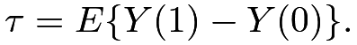 |
It decomposes to
 |
 |
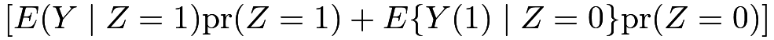 |
||
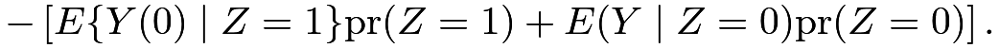 |
So the fundamental difficulty is to estimate the counterfactual means
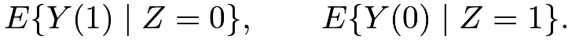 |
There are in general two extreme strategies to estimate them.
We have discussed the first strategy in Part III, which relies on ignorability. Assuming
 |
|
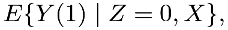 |
||
 |
|
 |
we can identify the counterfactual means by the observables:
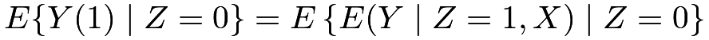 |
and, similarly,
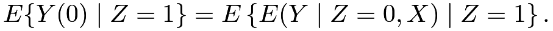 |
The second strategy in the next section assumes nothing except that the outcomes are bounded between
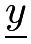
and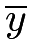
. This is natural for binary outcomes with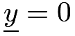
and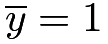
. With this assumption, the two counterfactual means are also bounded between and , which implies the worst-case bounds on .
Table 7 illustrates the basic idea and Chapter 93 below reviews this strategy in more detail.
.
Table 7 illustrates the basic idea and Chapter 93 below reviews this strategy in more detail.
![[\underline{y},\overline{y}]](m/bf46bce6cf02.png) , where and are two constants
, where and are two constants |
 |
 |
Lower |
Upper |
Lower |
Upper |
|---|---|---|---|---|---|---|
 |
 |
? | |
|
||
|
 |
? | |
|
||
 |
? |  |
|
| ||
|
? |  |
|
|
93 Manski-type worse-case bounds on the average causal effect without assumptions
Assume that the outcome is bounded between and . From the decomposition
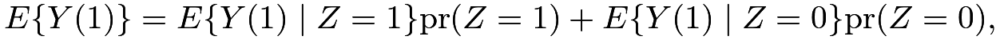 |
we can derive that
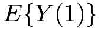
has lower bound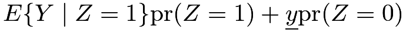 |
and upper bound
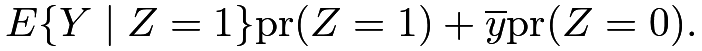 |
Similarly, from the decomposition
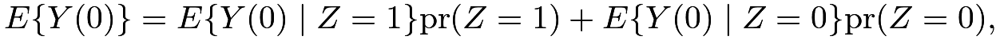 |
we can derive that
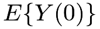
has lower bound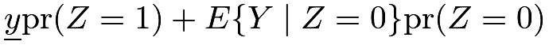 |
and upper bound
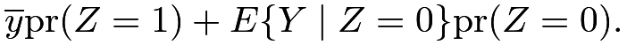 |
Combining these bounds, we can derive that the average causal effect
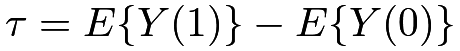
has the lower bound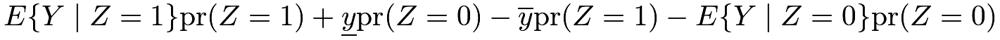 |
and the upper bound
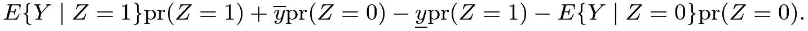 |
The length of the bounds is
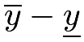
. The bounds are not informative but are better than the a priori bounds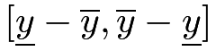
with length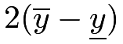
. Without further assumptions, the observed data distribution does not uniquely determine. In this case, we say that is partially identified, with the formal definition below.
Definition 18.1 (partial identification)
A parameter  is partially identified if the observed data distribution is compatible with multiple values of .
is partially identified if the observed data distribution is compatible with multiple values of .
Compare Definitions 10.1 and 18.1. If the parameter is uniquely determined by the observed data distribution, then it is identifiable; otherwise, it is only partially identifiable. Therefore, is identifiable with the ignorability assumption, but only partially identifiable without the ignorability assumption.
Cochran, (1953) used the idea of worse-case bounds in surveys with missing data but abandoned the idea because it often gives very conservative results. Similarly, the above worst-case bounds on are often uninteresting from a practical perspective because they often cover . Moreover, this strategy does not apply to the settings with unbounded outcomes.
Manski applied the idea to causal inference (Manski,, 1990) and many other econometric models (Manski,, 2003). This idea of bounding causal parameters with minimal assumptions is powerful when coupled with other qualitative assumptions. Manski, (2003) surveyed many strategies. For instance, we may believe that the treatment does not harm any units, so the monotonicity assumption holds:
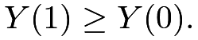
Then the lower bound on is zero but the upper bound is unchanged.
Another type of assumption is
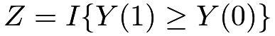
, that is, the treatment selection is based on the difference between the latent potential outcomes. This assumption can also improve the bounds on.
A more detailed discussion of this approach is beyond the scope of this book.
94 Sensitivity analysis for the average causal effect
The first strategy is optimistic and assumes that the potential outcomes do not differ across treatment and control groups, conditional on the observed covariates. The second strategy is pessimistic and does not infer the counterfactual means based on the observed data at all. The following strategy is in-between.
94.1 Identification formulas
Define
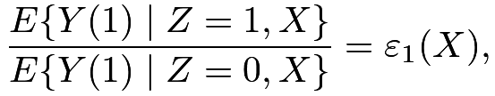 |
||
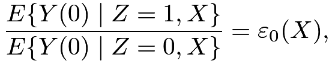 |
which are the sensitivity parameters. For simplicity, we can further assume that they are constant independent of  . In practice, we need to fix them or vary them in a pre-specified range. Recall that
. In practice, we need to fix them or vary them in a pre-specified range. Recall that  and
and  are the conditional mean functions of the observed outcomes under treatment and control, respectively. We can identify the two counterfactual means and the average causal effect as follows.
are the conditional mean functions of the observed outcomes under treatment and control, respectively. We can identify the two counterfactual means and the average causal effect as follows.
Theorem 18.1
With known 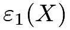 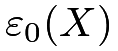
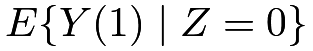 |
|
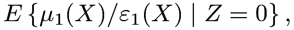 |
||
 |
|
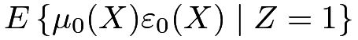 |
and therefore
|
|
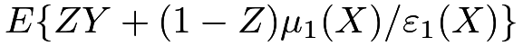 |
(90) | ||
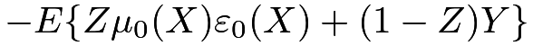 |
|||||
|
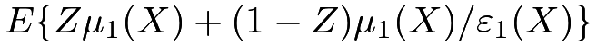 |
||||
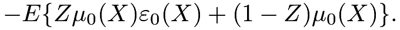 |
(91) |
I leave the proof of Theorem 18.1 to Problem 18.1.
With the fitted outcome model, (90) and (91) motivate the following predictive and projective estimators for :
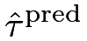 |
|
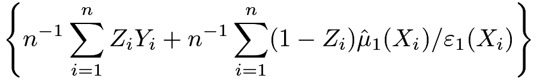 |
||
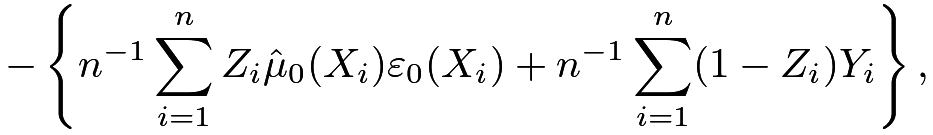 |
and
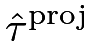 |
|
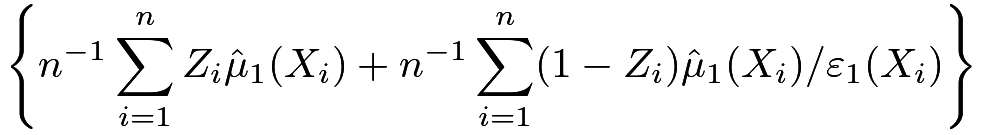 |
||
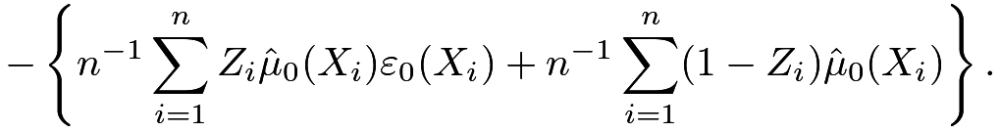 |
The terminology “predictive” and “projective” is from the survey sampling literature (Firth and Bennett,, 1998; Ding and Li,, 2018); see also Chapter 30.2.2. The estimators
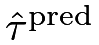
and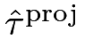
differ slightly: the former uses the observed outcomes when available, whereas the latter replaces the observed outcomes with the fitted values.More interesting, we can also identify by an inverse probability weighting formula.
Theorem 18.2
With known and , we have
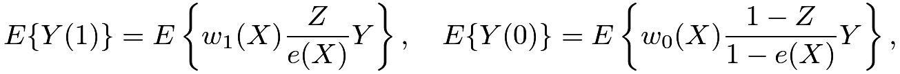 |
where
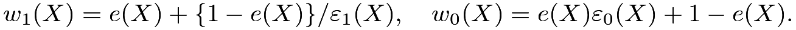 |
I leave the proof of Theorem 18.2 to Problem 18.2. Theorem 18.2 modifies the classic IPW formulas with two extra factors
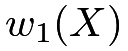
and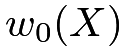
, which depend on both the propensity score and the sensitivity parameters. With the fitted propensity scores, Theorem 18.2 motivates the following estimators for:
|
||||
and
|
||||
More interestingly, with fitted propensity score and outcome models, the following estimator for is doubly robust:
That is, with known and , the estimator  is consistent for if either the propensity score model or the outcome model is correctly specified. We can use the bootstrap to approximate the variance of the above estimators. See Lu and Ding, (2023) for technical details.
is consistent for if either the propensity score model or the outcome model is correctly specified. We can use the bootstrap to approximate the variance of the above estimators. See Lu and Ding, (2023) for technical details.
When , the above estimators reduce to the predictive estimator, IPW estimator, and the doubly robust estimators introduced in Part III.
94.2 Example
94.2.1 R functions for sensitivity analysis
The following R function can compute the point estimates for sensitivity analysis.
I relegate the calculation of the standard errors to Problem 18.3.
94.2.2 Revisit Example 10.3
With
we obtain an array of doubly robust estimates of based on the following R code:
| 1/2 | 1/1.7 | 1/1.5 | 1/1.3 | 1 | 1.3 | 1.5 | 1.7 | 2 | |
|---|---|---|---|---|---|---|---|---|---|
| 1/2 | 11.62 | 10.44 | 9.40 | 8.03 | 4.96 | 0.97 | -1.69 | -4.35 | -8.34 |
| 1/1.7 | 9.22 | 8.05 | 7.00 | 5.64 | 2.57 | -1.42 | -4.08 | -6.75 | -10.74 |
| 1/1.5 | 7.63 | 6.45 | 5.41 | 4.05 | 0.97 | -3.02 | -5.68 | -8.34 | -12.33 |
| 1/1.3 | 6.03 | 4.86 | 3.81 | 2.45 | -0.62 | -4.61 | -7.27 | -9.94 | -13.93 |
| 1 | 3.64 | 2.47 | 1.42 | 0.06 | -3.01 | -7.01 | -9.67 | -12.33 | -16.32 |
| 1.3 | 1.80 | 0.63 | -0.42 | -1.78 | -4.85 | -8.85 | -11.51 | -14.17 | -18.16 |
| 1.5 | 0.98 | -0.19 | -1.24 | -2.60 | -5.67 | -9.66 | -12.33 | -14.99 | -18.98 |
| 1.7 | 0.36 | -0.82 | -1.86 | -3.23 | -6.30 | -10.29 | -12.95 | -15.61 | -19.60 |
| 2 | -0.35 | -1.52 | -2.57 | -3.93 | -7.00 | -10.99 | -13.65 | -16.32 | -20.31 |
Table 8 presents the point estimates. The signs of the estimates are not sensitive to sensitivity parameters larger than 1, but they are quite sensitive to sensitivity parameters smaller than 1. When the participants of the meal plan tend to have higher BMI (that is, and ), the average causal effect of the meal plan on BMI is negative. However, this conclusion can be quite sensitive if the participants of the meal plan tend to have lower BMI.
95 Homework Problems
18.1 Proof of Theorem 18.1
Prove Theorem 18.1.
18.2 Proof of Theorem 18.2
Prove Theorem 18.2.
18.3 Standard errors in sensitivity analysis
Chapter 94.2 only presents the point estimates. Report the corresponding bootstrap standard errors.
18.4 Sensitivity analysis for the average causal effect on the treated units 
This problem extends Chapter 13 to allow for unmeasured confounding for estimating
We can easily estimate  by the sample moment, . The only counterfactual term is
by the sample moment, . The only counterfactual term is  . Therefore, we only need the sensitivity parameter . We have the following two identification formulas with a known
. Therefore, we only need the sensitivity parameter . We have the following two identification formulas with a known
Theorem 18.3
With known , we have
|
|
|||
|
where 
Prove Theorem 18.3.
Remark: Theorem 18.3 motivates using to estimate  , where
, where
|
||||
|
||||
|
with  being the estimated conditional odds of the treatment given the observed covariates.
Moreover, we can construct the doubly robust estimator
for , where
being the estimated conditional odds of the treatment given the observed covariates.
Moreover, we can construct the doubly robust estimator
for , where
Lu and Ding, (2023) provide more details.
18.5 R code
18.6 Recommended reading
Rosenbaum and Rubin, 1983a () and Imbens, (2003) are two classic papers on sensitivity analysis which, however, involve more complicated procedures.